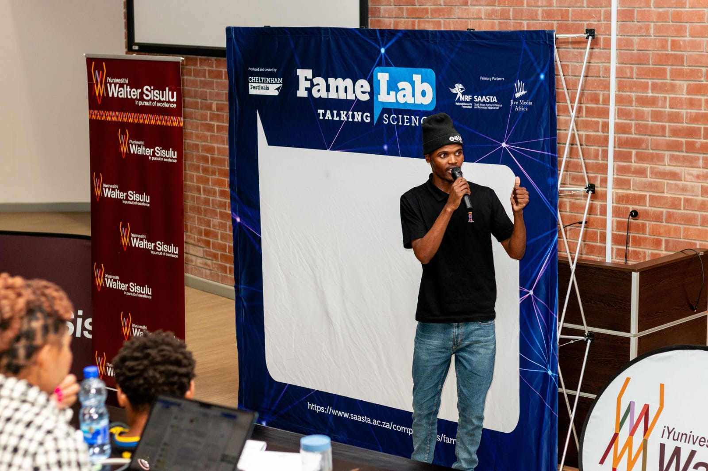

about
What do you want to know about me?
I am an Advanced Diploma in ICT in Applications Development student and aspiring Software Engineer, with a growing focus on backend development, information systems, data, and building software that solves real problems. Teaching Java has shaped how I learn just as much as it's helped others learn to code.
My current journey has been strongly shaped by Java. I have developed a solid foundation in Python, Java and Spring Boot, and I am continuing to deepen my understanding of backend engineering, databases, APIs, and software architecture.
Although backend development is where I feel most at home, I have deliberately explored web and mobile application technologies including JavaScript, TypeScript, React, Flutter, and Dart, because I wanted to understand how the entire system comes together, not just what happens inside a server.
I want to grow into an engineer who works on reliable software, meaningful information systems, and backend platforms that solve problems beyond the screen, and I'm increasingly drawn to cloud computing and AI-powered systems as part of that.
What could I build if I combine what I know about technology with what I care about as a person? I began to ask myself this question!
core skills
What makes sense from the skills perspective?
Professional Skills
tech stack
Programming Languages
Backend Development
Databases & Data
Software Engineering
Frontend Development
Mobile & Application Development
Testing & Development Tools
Data Analytics
selected work
Projects
School assessment management platform
A platform for managing high-school assessments end-to-end, built on Oracle APEX and Oracle Database.
MySunshine — Mobile Application
A personal mobile application concept designed around organisation, reminders and personalised everyday activities.
Planned functionality includes:
- User registration and authentication
- Login
- Splash screen
- Home dashboard
- Bottom navigation
- Calendar
- Personal planner
- Water reminders
- Notifications
- Journal functionality
- Profile management
Calculator App
A desktop calculator built with Java Swing, covering GUI event handling, layout management, and basic arithmetic logic.
Major projects, documentations, case studies, screenshots, and code walkthroughs are in my full portfolio website.
More projects ↗education
Education
Advanced Diploma in ICT in Applications Development
iYunivesithi Walter Sisulu
Course Work: Software engineering principles, DSA, OOP and design patterns, information systems, database systems, and applied software development.
iYunivesithi Walter Sisulu
professional experience
Experience
Academic Assistant (Tutor) — iYunivesithi Walter Sisulu
- Technical Programming I
- Technical Programming I
- Development Software III and Technical Programming II
awards & achievements
Awards & achievements
FEBEIT Tutoring Certificate of Recognition — 2025
For successfully facilitating tutorial sessions in 2025.
FEBEIT Tutoring Certificate of Recognition — 2024
For successfully facilitating tutorial sessions in 2024.
Samsung Innovation Campus (Python & AI) Graduate — 2024
AI and coding & programming course.
DIRISA Student Datathon Training — 2025
Data Analysis, Python, Statistics, Data Science, Machine Learning.
FameLab (Talking Science) Certificate of Participation — 2026
Eastern Cape Automotive & eMobility Hackathon Participant — 2025
hOBBIES
What do I really enjoy?
- Reading
- Programming
- Teaching and mentoring
- Exploring technology
- Watching Podcasts
- Playing Sports
- Sitting in front of my laptop
gallery
Gallery
why me
Before the pictures
I am a teacher at heart ·
I enjoy explaining and teaching concepts and helping others reach the point where something finally clicks.
I am a continuous learner ·
I am rarely satisfied with knowing what something is. I want to understand why and how it works.
I care about fundamentals ·
I would rather build a strong foundation than rush through a subject simply to say I have learned it.
I spend time thinking about what I am doing, where I am going, and what I can improve.
I read books to stimulate my brain and to have fun.
gallery
New here? This is a real introduction of myself!

documents
Documents
get in touch
Contact
Simamkele Yawa
East London, Eastern Cape · github.com · www.linkedin.com · www.myportfolio.com
Professional Profile
I am an Advanced Diploma in ICT in Applications Development student and aspiring Software Engineer, with a growing focus on backend development, information systems, data, and software engineering. I have developed a foundation in Java, Spring Boot, and Python, while also gaining experience with databases, APIs, software architecture, and technologies such as JavaScript, TypeScript, React, Flutter, and Dart. My experience tutoring Java has also shaped how I learn and approach engineering, teaching me the importance of understanding concepts deeply enough to explain them clearly and help others grow in confidence. Looking ahead, I want to become a software engineer who builds reliable, scalable, and meaningful systems that solve real-world problems. I am particularly interested in backend engineering, cloud computing, artificial intelligence, data-driven solutions, and AI-powered systems. Rather than simply collecting technologies, I want to understand problems first, systems second, and technology as the tool that connects the two. Beyond technology, I am passionate about teaching, reading, learning, communication, and personal growth, and I aim to continuously develop as an engineer, teacher, communicator, problem solver, and lifelong learner.
Education
iYunivesithi Sisulu University
Course Work: software engineering principles, DSA, OOP and design patterns, information systems, database systems, and applied software development.
iYunivesithi Sisulu University
Professional Experience
iYunivesithi Sisulu University
Tutoring Areas:
- Technical Programming I
- Technical Programming II
- Development Software III
Technical Skills
Awards & Achievements
- FEBEIT Tutoring Certificate of Recognition — 2025
- FEBEIT Tutoring Certificate of Recognition — 2024
- Samsung Innovation Campus (Python & AI) Graduate — 2024
- DIRISA Student Datathon Training — 2025
- FameLab (Talking Science) Certificate of Participation — 2026
- Eastern Cape Automotive & eMobility Hackathon Participant — 2025
Selected Projects
- For my projects visit my portfolio: